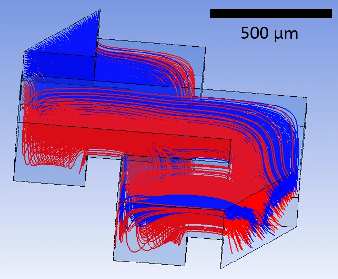
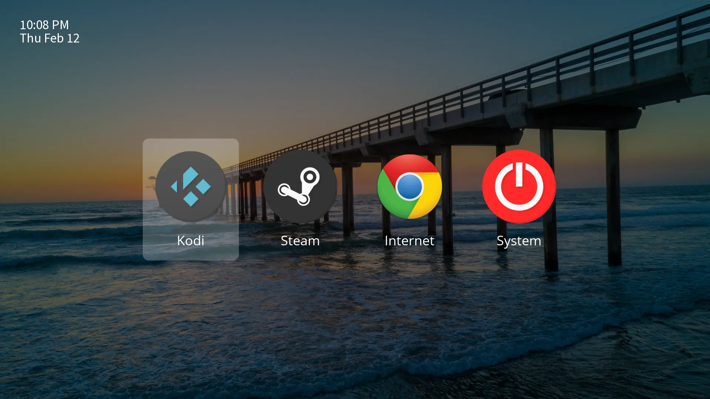
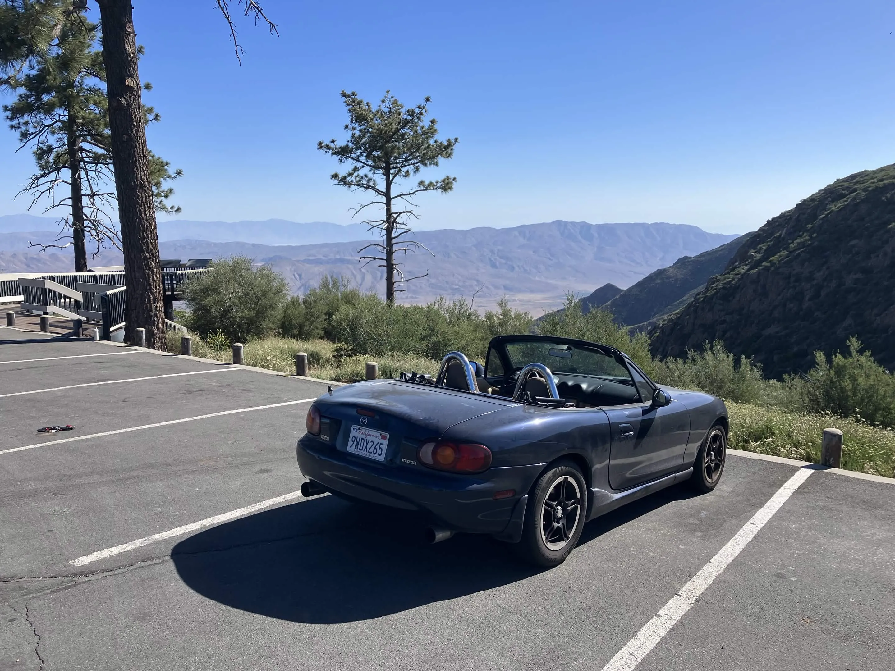
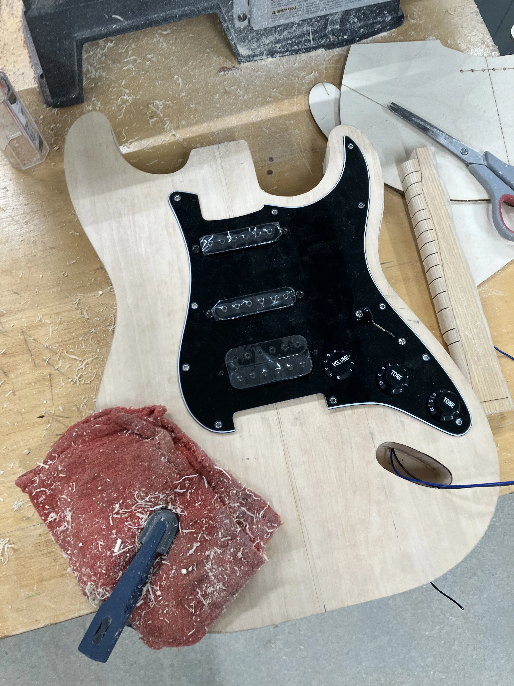

Research
CFD simulation of a spherical particle subjected to an oscillating background flow field, showing the nondimensional vorticity. I relate this mechanism to the force acting on the particle.
For my main PhD research project, I use computational fluid dynamics (CFD) simulations to resolve the unsteady forces acting on a small particle immersed in a background fluid flow. This is a classical problem in fluid mechanics and has remained an active area of research for over a century.
The practical motivation is broad: particles in unsteady flows appear in clouds, as droplets in combustion chambers or chemical reactors, and as pollution in oceans. Accurate understanding of the forces acting on these particles is needed to better predict and simulate their behavior.
Outside of practical motivations, the project has allowed me to build my own simulation, visualization, and data analysis pipelines, and given me tools for handling and understanding nonlinear (and nonlocal) transport physics.
For an upper-division undergrad class on structural dynamics, we looked at how we could use spring-mass vibration absorbers to control the vibrations of coupled structures. Coupled structures arise in applications like airplane wings (panels connected by spars), skyscrapers spanned by a skybridge, or an offshore platform on piles.
Using an energy-based model for any set of linear beams, we derived a mathematical method for finding appropriate spring-mass absorbers to cancel out vibrations at particular locations along the structure. We then simulated the beams' responses in MATLAB, confirming the approach (at least, theoretically).

Simulated streamlines of two initially unmixed fluids within one cell of the mixer. Black bar for scale.
Bioprinters are devices that print models of human tissue to study diseases and medicines. To do this, they use microfluidic mixers, which efficiently mix viscous fluids at small scales. My role on this project involved simulating a model microfluidic mixer using a commercial computational fluid dynamics (CFD) code, evaluating its performance for a series of designs, and comparing those results to benchtop experiments.
Later in the project, we investigated incorporating non-Newtonian effects into the simulation, to see if we could use visco-elastic instabilities to more efficiently mix the fluids. To do this, we learned about various viscous and visco-elastic fluid models and ran rheometer characterizations. This part of the work was still in progress when I graduated.
Not research
A prototype of the force-torque sensor registers my touch, as indicated by the LED coming on.
During undergrad, I spent a summer doing a mechatronics internship at a startup called Trilobio, who builds robots and software for automating biology labs. During the summer, I took on the full design cycle for a force-torque sensor intended for collision detection and force-torque measurement on the robot's arm and its connected tools.
The mechanical side involved designing and machining an aluminum flexure, within which the electronics were housed. The electronics consisted of several mixed-signal sensing circuits on a custom PCB. The microcontroller firmware took care of the sensing, signal detection, and CAN integration within the larger robot.
Overall, I learned a ton about mechatronics and mixed-signal design over the summer and I had a lot of fun solving problems at a fast-paced startup. Being able to develop the full cycle of an engineering product was an awesome feeling, and was all I needed to know that I chose the right career.

A screenshot of the media station's homescreen. Kodi provides access to media, Steam connects to my desktop to stream games, and Chrome is the browser.
I found myself growing increasingly frustrated with needing to switch between clunky apps on our living room smart TV. I also wanted a way to play PC games from my couch, even with my desktop computer in the other room (our office).
So I put together this living room media station on a Raspberry Pi. It connects to all of the streaming services we use, streams Steam games live from my desktop computer (with a latency <40 ms), and allows us to surf the web, all from one integrated home screen. It's configured to work with either a keyboard or video game controller and automatically routes non-local internet traffic through a VPN.
This project has been partner-approved.

My Miata takes a break from a drive on Sunrise Highway (County Rd. S1).
My Miata is older than I am, so maintenance is a project in and of itself. I haven't done anything too involved with the car (yet), but checking up on old car whooshes and rattles and doing regular maintenance is a fun way for me to practice getting my hands dirty and grow my appreciation for analog machinery. Plus not much beats having a working Miata on a twisty road.
On account of a sticking doorlatch, a tight passenger seatbelt, and broken A/C, this project is not yet partner-approved.

The routed guitar body with the custom pickguard.
I wanted a new guitar, so I figured I would just build it, since the body of an electric guitar is mostly just a hunk of wood. I wanted an HSS stratocaster, so I put together a custom electronics setup with a normal strat 5-way switch and a tone knob that splits the bridge humbucker when you pull it.
The guitar body is still a WIP, stay tuned.